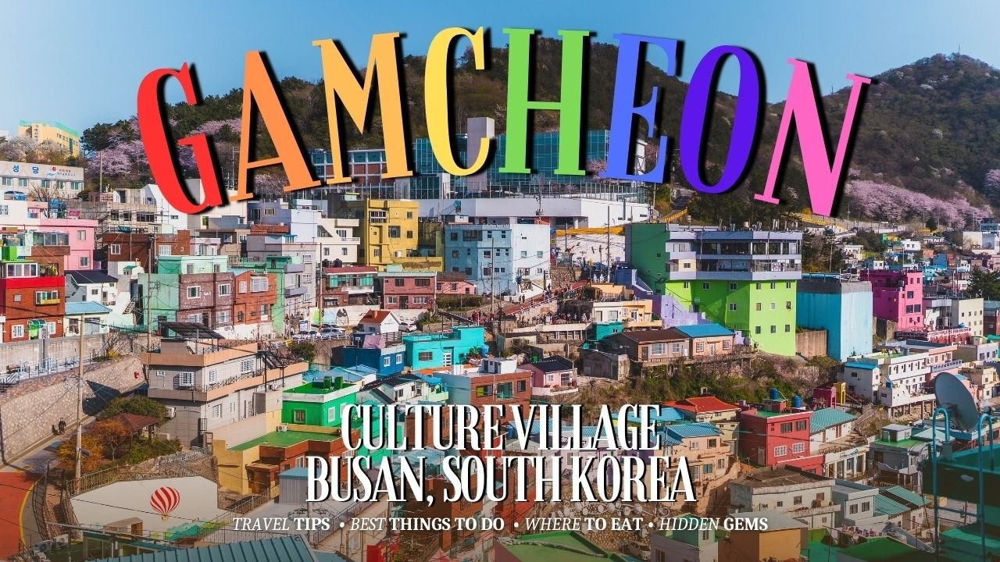
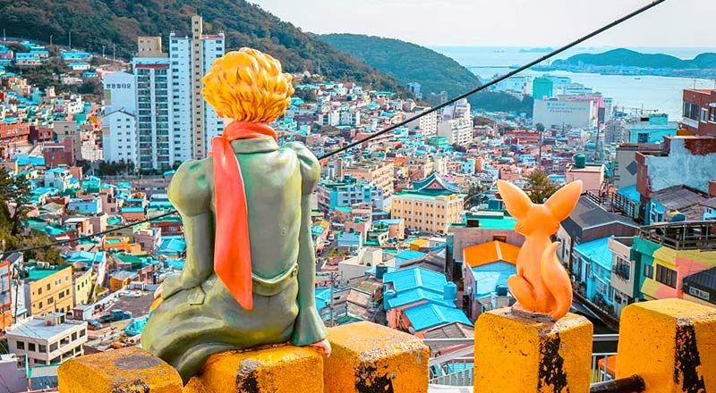
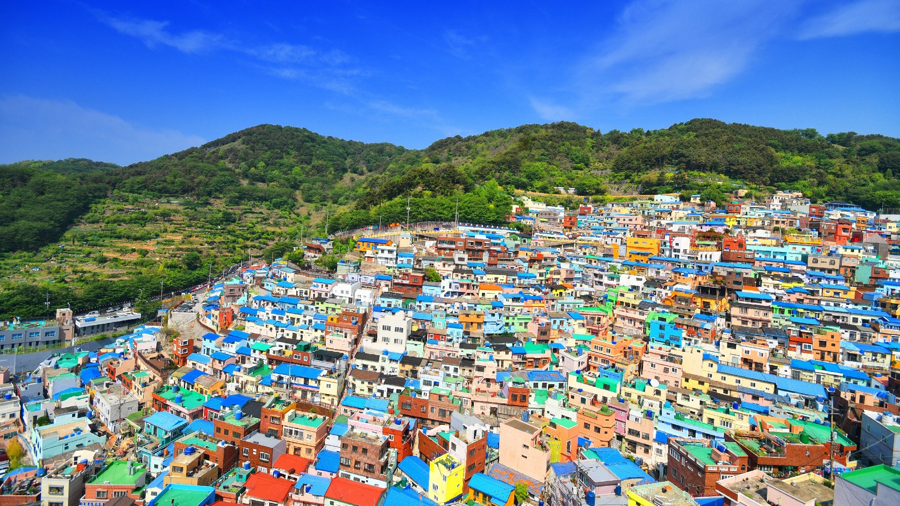
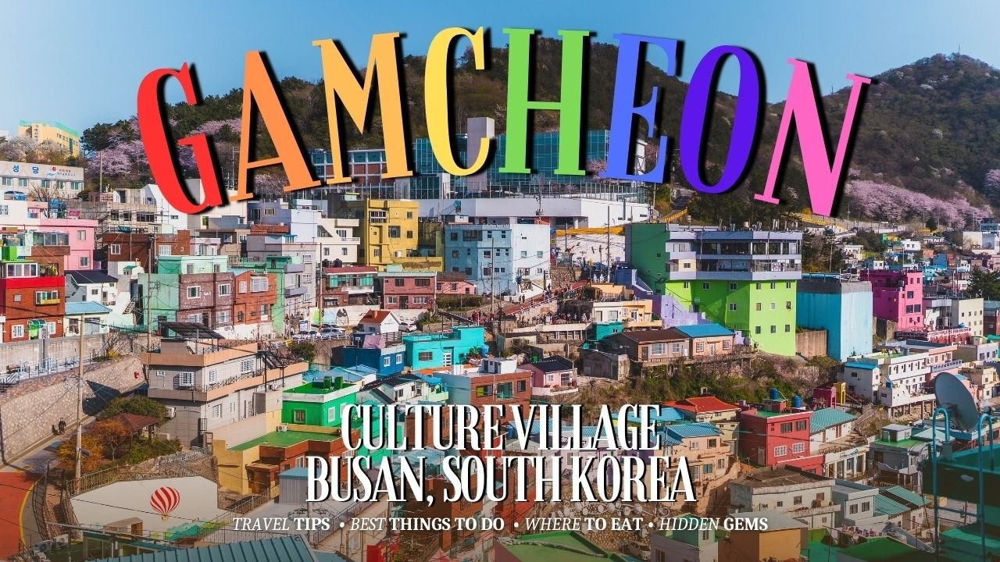
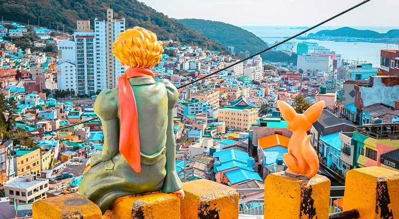
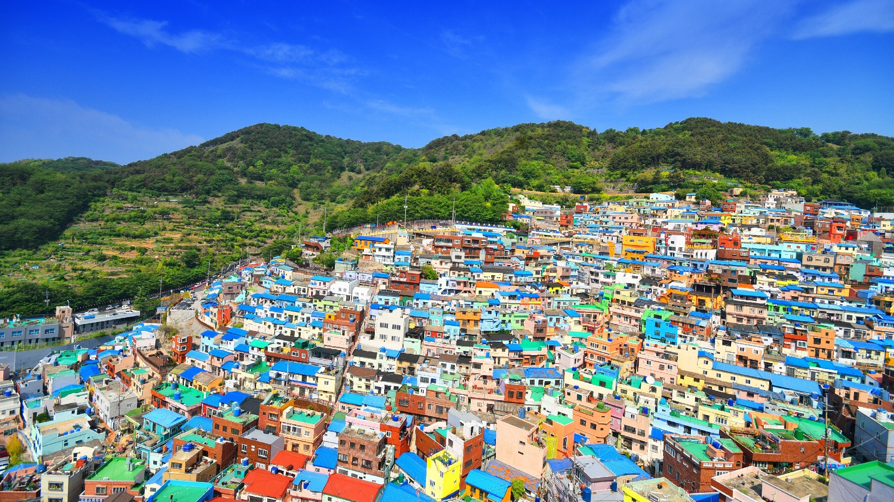
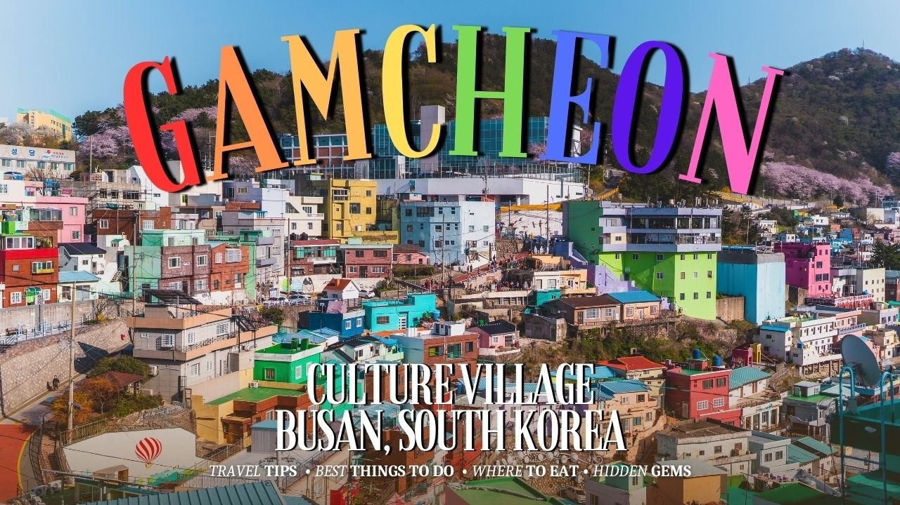
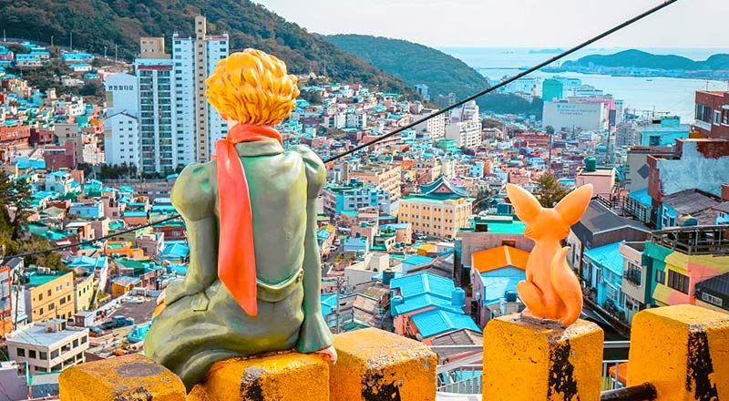
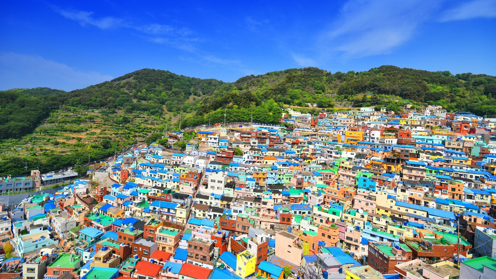

Gamcheon Culture Village in Busan is one of Korea’s most colorful and artistic destinations. Often called the “Machu Picchu of Korea,” this hillside village is filled with brightly painted houses, narrow alleys, murals, and quirky art installations created by local artists and residents. Visitors love exploring its winding paths, taking photos at scenic viewpoints, browsing small cafés and craft shops, and discovering hidden artworks at every corner. Because of its unique layout and vibrant colors, Gamcheon has become a top spot for photography, culture walks, and learning about Busan’s creative community. It's a perfect blend of history, art, and stunning views of the port city.
Gamcheon is more than just a pretty village—it’s a place where history and creativity meet. The village was once home to refugees after the Korean War, and today its buildings, staircases, and pathways tell the story of community life. Over the years, local artists added murals and installations, turning the area into a cultural landmark. Travelers love the playful art pieces, themed houses, souvenir shops, and panoramic viewpoints. Whether you’re exploring alone or with friends, the village’s charm makes it a memorable part of any Busan trip.
Gamcheon is more than just a pretty village—it’s a place where history
and creativity meet. The village was once home to refugees after the
Korean War, and today its buildings, staircases, and pathways tell the
story of community life. Over the years, local artists added murals and
installations, turning the area into a cultural landmark. Travelers love
the playful art pieces, themed houses, souvenir shops, and panoramic
viewpoints. Whether you’re exploring alone or with friends, the
village’s charm makes it a memorable part of any Busan trip.
Visiting Gamcheon Culture Village feels like stepping into a
real-life art gallery. Nearly every wall, step, and rooftop is decorated
with vibrant artwork. Popular spots include the “Little Prince” statue,
the colourful stairways, and the sky-blue viewpoints overlooking the
village. There are also small museums, local food stalls, and workshops
where you can try making crafts. The combination of lively art, friendly
locals, and stunning hillside scenery gives Gamcheon a unique vibe you
won’t find anywhere else in Korea.


